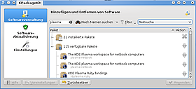
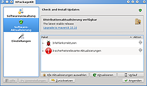
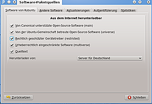
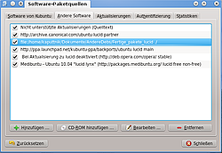
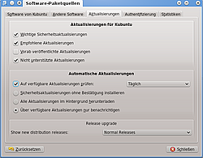

KPackageKit
Archivierte Anleitung
Dieser Artikel wurde archiviert, da er - oder Teile daraus - nur noch unter einer älteren Ubuntu-Version nutzbar ist. Diese Anleitung wird vom Wiki-Team weder auf Richtigkeit überprüft noch anderweitig gepflegt. Zusätzlich wurde der Artikel für weitere Änderungen gesperrt.
Zum Verständnis dieses Artikels sind folgende Seiten hilfreich:
 Ab Kubuntu 11.10 Oneiric Ocelot wurde das hier beschriebene Programm durch die Muon-Suite mit Muon Programmverwaltung, Muon Aktualisierungsverwaltung und Muon Paketverwaltung abgelöst. Für frühere Versionen befindet sich die Paketverwaltung KPackageKit direkt in den KDE Systemeinstellungen. Man öffnet sie über den Punkt:
Ab Kubuntu 11.10 Oneiric Ocelot wurde das hier beschriebene Programm durch die Muon-Suite mit Muon Programmverwaltung, Muon Aktualisierungsverwaltung und Muon Paketverwaltung abgelöst. Für frühere Versionen befindet sich die Paketverwaltung KPackageKit direkt in den KDE Systemeinstellungen. Man öffnet sie über den Punkt:
"Systemeinstellungen -> Hinzufügen und Entfernen von Software"
Die Softwareverwaltung kann auch direkt über KRunner ( Alt + F2 ) und die Eingabe KPackageKit" geöffnet werden.
Hauptfenster¶
 Das Fenster enthält links die einzelnen Abschnitte:
Softwareverwaltung - Pakete installieren oder entfernen
Software-Aktualisierung - Updates oder Upgrade durchführen
Einstellungen - Einstellung der Paketquellen
Standardmäßig ist der erste Abschnitt geöffnet.
Softwareverwaltung¶
Um Software zu installieren oder zu entfernen, muss man nach dem Paket suchen, hierfür gibt man einfach den Suchbegriff in das dafür vorgesehene Suchfeld ein. Die Suche startet nicht automatisch, sondern muss durch Drücken von ⏎ oder dem Anklicken des Suchsymbols gestartet werden.
Es gibt verschiedene Filter- und Suchkriterien zur genaueren Einschränkung der Suche. Diese sind über die jeweiligen Pfeile der folgenden Bereiche zu erreichen:
"Nach Namen suchen": Nach Paket- oder Dateinamen oder in Paket-Beschreibungen suchen
"Filter": z.B. Suche nach installiert/nicht installiert oder Grafisch/Text. Hier findet sich auch ein Schalter, um die gruppierte Anzeige der Suchergebnisse aus zu schalten.
"Textsuche": z.B. Einschränkung der Suche nach KDE/GNOME
Nach einer Änderung der Suchkriterien werden die Suchergebnisse durch ⏎ aktualisiert.
Suchergebnisse¶
Die Suchergebnisse werden in einer Tabelle dargestellt, welche zwei Spalten enthält: "Paket" und "Aktion". Erstere enthält eine Kurzbeschreibung und den Paketnamen.  -Klickt man auf einen solchen Eintrag, werden zusätzliche Informationen angezeigt und man kann z.B. die Abhängigkeiten des Paketes ermitteln.
-Klickt man auf einen solchen Eintrag, werden zusätzliche Informationen angezeigt und man kann z.B. die Abhängigkeiten des Paketes ermitteln.
Software installieren/entfernen¶
Noch nicht installierte Pakete werden deaktiviert dargestellt und in der Aktions-Spalte wird ein ausgegrautes Pfeil-Symbol angezeigt. Durch einen -Klick auf dieses Symbol wird das Paket zur Installation vorgemerkt. Nun wandelt sich die Farbe des Pfeils von grau nach Blau. Möchte man die Vormerkung aufheben, so -klickt man erneut auf das Symbol.
Installierte Pakete werden ebenfalls ausgegraut dargestellt und in der Aktionen-Spalte steht ein X-Symbol. Durch einen -Klick auf dieses Symbol wird das Paket zum Entfernen vorgemerkt. Möchte man die Vormerkung aufheben, so -klickt man einfach erneut auf das Minus-Symbol.
Um die vorgemerkten Änderungen durchzuführen, -klickt man auf den Knopf "Anwenden". Nun werden die Abhängigkeiten ermittelt und angezeigt. Hier hat man auch noch einmal die Möglichkeit, den Vorgang abzubrechen, falls man die Abhängigkeiten nicht installieren/entfernen möchte. Nachdem die Abhängigkeiten auch bestätigt wurden, wird versucht, root-Rechte zu erhalten und es wird gegebenenfalls nach dem Passwort gefragt [1].
Software-Aktualisierung¶
Der Punkt "Software-Aktualisierung" öffnet die Verwaltung zur Aktualisierung von Paketen. Diese kann auch direkt über KRunner ( Alt + F2 ) und die Eingabe von "Software-Aktualisierung" geöffnet werden.
Hierüber kann auch ein evtl. vorhandenes Distributionsupgrade durchgeführt werden.
 In dieser Ansicht wird die Anzahl der aktualisierbaren Pakete angezeigt, sofern Updates verfügbar sind. Über die Schaltfläche "Aktualisieren" kann man die Paketlisten erneuern und nach verfügbaren Updates schauen. Sollten nun Aktualisierungen möglich sein, so wird dieses angezeigt.
Über die Schaltfläche "Alle Aktualisierungen auswählen" werden alle verfügbaren Aktualisierungen eingespielt. Möchte man nur einzelne Pakete aktualisieren, so kann man sich durch einen -Klick auf das kleine Plus-Symbol in der Spalte Package neben dem Warnsymbol alle aktualisierbaren Pakete anzeigen lassen. Nun kann man wie im Abschnitt Software installieren/entfernen beschrieben einzelne Pakete über das Plus-Symbol in der Spalte Action zur Aktualisierung vormerken und über die Schaltfläche "Anwenden" aktualisieren.
Sollte nach dem Einspielen der Aktualisierungen ein Neustart des Systems erforderlich sein, so wird dies durch ein Symbol im Systemabschnitt der Kontrollleiste angezeigt und eine Benachrichtigung erscheint auf dem Bildschirm. Durch einen -Klick auf das Symbol im Systemabschnitt kann direkt das System neugestartet werden.
Benachrichtigung zu Software-Aktualisierungen¶
Kubuntu überprüft automatisch, ob Aktualisierungen bereitstehen. Dies wird im Systemabschnitt der Kontrollleiste durch das Aktualisierungs-Symbol angezeigt. Fährt man mit der Maus über das Symbol, wird angezeigt, wie viele Aktualisierungen verfügbar sind.
Durch einen -Klick auf das Symbol wird die Software-Aktualisierung geöffnet. Hier kann man nun wie oben beschrieben die Aktualisierung durchführen.
Einstellungen¶
Der Punkt "Einstellungen" bietet mittels der Schaltfläche "Softwarequellen verwalten" Zugriff auf die Verwaltung der Paketquellen. Zugriff wird nur dem Benutzer mit root-Rechten gestattet.
Allgemeine Informationen zu den Einstellungen findet man im Artikel Paketquellen. Diesen Artikel sollte man sich vor dem Fortfahren durchgelesen haben.
Software von Kubuntu¶
 Hier werden die Standardquellen konfiguriert. Nach der Installation sind die Quellen für main, restricted, universe und multiverse schon eingetragen und auch aktiviert. Möchte man dies ändern, können die Quellen deaktiviert werden, indem man das Häkchen beim entsprechenden Eintrag entfernt.
Experten-Info:
Man kann hier auch Ubuntu Source-Paketquellen über den Punkt "Quelltext" aktivieren, was in sources.list genauer erklärt ist, da man diese Quellpakete nur in der Konsole herunterladen kann.
Andere Software¶
 Hier können zusätzliche Softwarequellen eingetragen werden:
PPAs
Andere Fremdquellen
Wurden solche Quellen zur Paketverwaltung hinzugefügt, wird man nach schließen des Fensters "Software-Paketquellen" aufgefordert, die Paketquellen neu einzulesen.
Lokale und Fremdquellen hinzufügen¶
Lokale und andere Fremdquellen werden in der gleichen Art und Weise hinzugefügt. An dieser Stelle ein Beispiel für eine PPA-Quelle:
In Wiki-Artikeln werden gelegentlich Fremdquellen z.B. in folgender Form angegeben:
deb http://archive.czessi.net/ubuntu lucid main restricted universe multiverse
Hinweis!
Zusätzliche Fremdquellen können das System gefährden.
Um beispielsweise diese Quelle einzufügen, öffnet man wie bereits beschrieben das Fenster für die Paketverwaltung und geht zum Reiter "Andere Software". Dort klickt man auf "Hinzufügen" und gibt die gewünschte Paketquelle ein.
Nachdem sie eingetragen wurden, sind die Fremdquellen automatisch aktiviert und können, genau wie die Standardquellen auch, wieder deaktiviert werden, indem man das entsprechende Häkchen entfernt.
PPA-Quellen können auch in Form der folgenden Zeile eingefügt werden:
ppa:launchpad-team/ppa-name
Die PPA-Quelle wird dadurch hinzugefügt und auch gleich automatisch authentifiziert, also als vertrauenswürdig eingestuft. Wie das für andere Paketquellen geschieht, ist im Abschnitt Authentifizierung beschrieben.
CD/DVD als Paketquelle hinzufügen¶
Um eine CD/DVD als Paketquelle hinzuzufügen, öffnet man wie bereits beschrieben das Fenster für die Paketverwaltung und geht zum Reiter "Third-Party Software". Dann legt man die CD ein, die eingelesen werden soll, und -klickt auf die Schaltfläche "CD-ROM hinzufügen".
Es ist kein Problem, mehrere CD-Quellen einzutragen, auch wenn man nur ein CD-Laufwerk besitzt. Bei Paketen, die auf einer anderen CD liegen, wird man aufgefordert, diese einzulegen.
Aktualisierungen¶
 Der Reiter "Aktualisierungen" bietet folgende Einstellungsmöglichkeiten:
Aktualisierungen für Kubuntu¶
Unter "Aktualisierungen für Kubuntu" kann man einstellen, welche Aktualisierungen berücksichtigt werden sollen. Neben wichtigen Sicherheitsaktualisierungen (Archiv security) und empfohlenen Aktualisierungen (Archiv updates) können auch vorab veröffentlichte (Archiv proposed) und nicht unterstützte Aktualisierungen (Archiv backports) heruntergeladen werden.
Achtung!
Vorab veröffentlichte und nicht unterstützte Aktualisierungen können die Stabilität des Systems gefährden!
Automatische Aktualisierungen¶
Hier kann man einstellen, wie oft automatisch nach Aktualisierungen geschaut werden soll. Standardmäßig wird täglich nach Aktualisierungen geschaut. Weitere Einstellungen sind selbsterklärend.
Authentifizierung¶
Wenn man bei der Paketinstallation aus Fremdquellen nicht immer eine Warnmeldung sehen möchte, dass die Quelle nicht authentifiziert werden kann, empfiehlt es sich diese als vertrauenswürdig einzustufen. Dazu gibt es in den meisten Wiki-Anleitungen (oder alternativ auf den Webseiten der Betreuer) eine GPG-Schlüsseldatei (*.asc), die man herunterladen muss. Wenn vorhanden, können heruntergeladene Authentisierungsschlüssel der neuen Quelle im Fenster für die Paketverwaltung bei dem Reiter "Authentifizierung" mit "Schlüsseldatei importieren" hinzugefügt werden. Der Standard (d.h., dass nur die Standardquellen authentisiert sind) kann über "Vorgabeschlüssel wiederherstellen" eingestellt werden.
Problemlösungen¶
Blockierte Updates¶
Die Softwareverwaltung zeigt unter Umständen blockierte Updates an. Dies passiert, wenn ein zu aktualisierendes Paket zusätzliche Pakete installieren oder bestehende entfernen möchte. Leider kann man diese Abhängigkeiten mit der Softwareverwaltung nicht lösen und muss auf die Konsole mit apt-get oder aptitude ausweichen.
 Übersichtsartikel
Übersichtsartikel- Erstellt mit Inyoka
-
 2004 – 2017 ubuntuusers.de • Einige Rechte vorbehalten
2004 – 2017 ubuntuusers.de • Einige Rechte vorbehalten
Lizenz • Kontakt • Datenschutz • Impressum • Serverstatus -
Serverhousing gespendet von